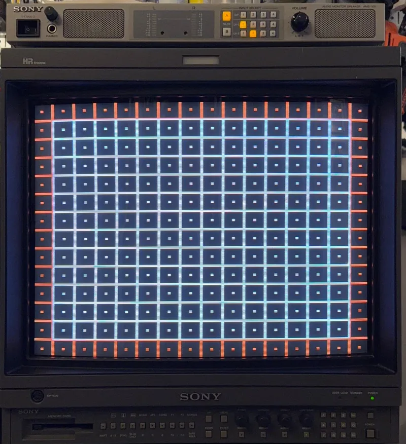
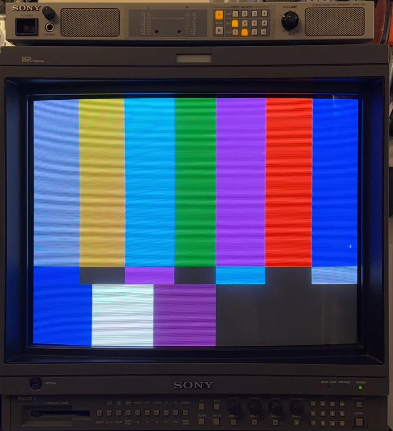
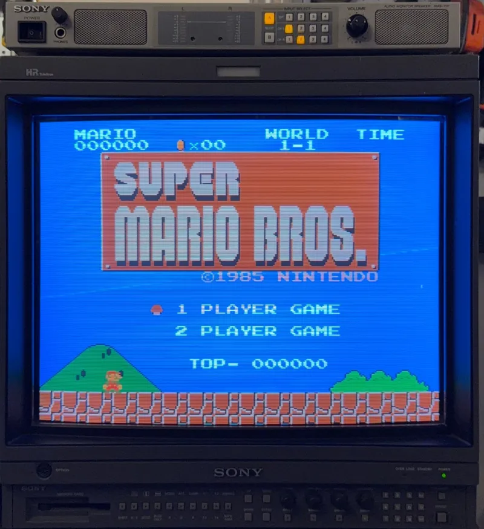

Thirty More Years
The BVM-20E1U arrived working and looking good. It went to SavonPat anyway. A former Sony technician who counts this chassis among his favorites, he gave it the kind of service that has nothing to do with fixing a fault and everything to do with the next thirty years.
Nothing was wrong with it. That is worth saying first, because most service stories open with a symptom, and this one has none. The BVM-20E1U joined the fleet this year with a sharp picture, a plate that reads October 1998 and 44,708 hours on its meter: a little over five years of running time, spread across twenty-eight. It did everything a 20E1U is supposed to do.
It is also the one monitor here that cannot be replaced. One thousand TV lines at twenty inches in 4:3 is a number Sony reached on this chassis and never again, and a sound example almost never turns up. With a tube that scarce, “working” is the wrong standard. The right one is whether it will still be working decades from now, and that is decided by parts that give no warning on screen. Electrolytic capacitors age on the calendar whether the set runs or sits, and they drift out of spec long before they fail. The time to deal with them is while the picture is still perfect.
The right bench
That meant one bench. Pat, known as SavonPat to anyone who has gone looking for professional monitor service in Southern California, was a Sony technician who specialized in exactly two product lines, the PVMs and the BVMs, and serviced and calibrated them from five inches to thirty-two. He is the same hands behind the full service on the BVM-A14F5U. Over the last year or so he has also become a friend, and living a short drive from someone who can do this work, and is willing to, is a piece of luck this collection does not take for granted.
The 20E1U is one of his favorite monitors, and he does not hedge about why.
The best 20-inch tube Sony ever made.
— SavonPat, on the BVM-20E1U
Service first, then calibration
Pat has a rule he has stated publicly: the hardware gets serviced before anything gets calibrated, because the two are one job and they only work in that order. A monitor that will not hold a calibration has a tired capacitor somewhere, and no amount of menu work fixes a part.
So the service came first, and the bar was strict. He recapped every board inside the chassis, and any capacitor that tested even slightly below spec came out, whether or not it had failed. On a monitor this age, that is the difference between a recap and a repair.
What a full service covers
- The power supply — The board that runs hottest and works hardest, and the first place old electrolytics give up.
- The deflection module — It steers the beam, so it decides geometry and stability. Dozens of capacitors live here.
- The video module — The signal path from the inputs to the tube.
- Parts that outlast the originals — Pat’s own standard is capacitors rated for 105 °C, with values brought in line with the running changes Sony made late in production.
- The tube — Serviced, and the one part of a 20E1U that nobody can order.
- Calibration — The BVM’s built-in crosshatch, dot, grayscale and white patterns for geometry, convergence and focus; the adjustments at the yoke that many technicians leave alone; and white balance, which on a BVM is set with a color probe, not by eye. On this chassis all of it runs through the BKM-10R control unit, because the monitor has no controls of its own.
- The shell — Cleaned and sanded, inside the brief and not an afterthought.
About those hours
44,708 hours is the number of a monitor that has worked for a living. Pat’s own view, from the bench, is that a tube in ordinary use is good to 60,000 hours and often well beyond. By that measure this one has a long road left, which is the whole reason the rest of the chassis was worth bringing up to meet it.
On screen
Back on the shelf, the first signal it got was the 240p test suite from the NES underneath it: the grid at the top of this page, then color bars. After that came the reason any of this matters.


What was done
- Every board recapped — Any capacitor that tested even slightly below spec replaced.
- Tube serviced — The irreplaceable part, looked after.
- Picture calibrated — After the service, in that order.
- Shell cleaned and sanded — Inside the brief.
- Serviced by — SavonPat, former Sony PVM and BVM technician, Southern California.
Fit for the field
When it was done, Pat gave it the verdict that counts from someone who used to send these out for a living: this monitor is fit to go back to work. He would have no reservations about putting it into the field today, if there were still a field to put it in. Broadcast moved on from tubes long ago, so it has a different job now, but the standard it was brought back to is the one it was built for.
A monitor like this is on loan from the people who built it to whoever looks after it next. It left the line in 1998, spent its working life as somebody’s reference, and now has a fresh set of parts and a technician’s alignment behind it. The aim of the whole exercise was another thirty years. It has every chance.
Quick answers
What does a full service on a Sony BVM involve?
Hardware first: the power supply, deflection and video boards recapped, with any capacitor below spec replaced. Then the tube is serviced and the picture is calibrated: geometry, convergence, focus and white balance.
Why service a monitor that already works?
Electrolytic capacitors drift out of spec with age before they fail, and nothing on screen says so. Replacing them while the set still works protects the parts that cannot be replaced, the tube first among them.
Why does service come before calibration?
A calibration only holds on healthy hardware. A monitor that will not calibrate has a failing part, and the part has to be fixed first.
Is 44,708 hours a lot for a BVM tube?
Not by the measure of the technician who serviced this one. For ordinary use, he puts a tube’s useful life at 60,000 hours and often well beyond.
Who serviced it?
SavonPat, a former Sony PVM and BVM technician in Southern California, who also did the full service on the arcade’s BVM-A14F5U.
Pat’s service-before-calibration rule, his capacitor standard and his view on tube life are from his interview with RetroRGB. The work list for this monitor is the owner’s account of the service.
← More stories The BVM-20E1U profile → Every BVM-20E1U in the registry →